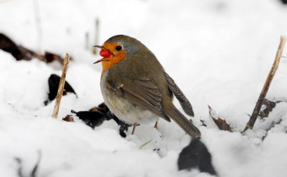

冬天鸟类食物匮乏，很多可以吃的果实、种子在深秋和初冬就被鸟儿啄食完毕。尤其雪后，大雪覆盖了本来贫瘠的土地，鸟儿要一直饿着肚子等着雪化了才能觅食。很多当年出生的新鸟和体弱的老鸟会被冻死饿死。一对野生鸟一般一年成功繁殖十只小鸟。这十只小鸟能成功活到第二年繁殖季节的不到四分之一。其中将近一半的小鸟都是因为在第一年冬天中没有足够的过冬食物而死亡，所以冬天喂食野生鸟意义重大。
所以建议各位同修，各位善良的人们，冬天给鸟类买些食物，如
《施食获五福报经》上说：布施饮食的人，今生或来世可以得到五种福报“寿、安、色、力、辩。”
第一是是
第二是身心得到平安。因为人类和动物缺乏饮食时，身心都会烦燥、紧张、
第三是获得较美好的身材和容貌。因为人类和动物缺乏了饮食，身心就会枯瘦，容貌就会憔悴，所以布施饮食的人，一定会得到美好的容貌和身材。
第四是身体较有力气。因为人和动物缺乏饮食时，就会四肢无力。布施饮食等于间接供给别人充分的气力，所以施者今生或来世一定会得到孔武有力的果报。
第五是得到较优秀的辩才。因为人类和动物都需要有充分的饮食做后盾，肚子饥饿，口里又干燥，虽有唇舌，也很难发挥说话和鸣叫的功能。
布施饮食等于间接在帮助别人的口才。所以施舍饮食的人，今生或来世一定会得到较好的辩才。
除此之外，施舍饮食，护生
最后提醒大家一下：施食的时候最好给食物做下
对我们来说几块钱不算什么，对它们来说无比重要！有了救命的食物，它们就能熬过漫长的冬天！而救了它们的命，您也必定会福寿绵长！
喂食地点：一般在小区相对僻静的空地、房顶上。公园远离人行道的树林中、山坡上。绿地中央的井盖、平地中。郊区的树林中、
喂食地点要求：最好是人迹罕至、地面视野特别开阔、无哺乳类天敌出没的地方。
①国外很多人在野外、自家院内悬挂这种喂鸟器，饲喂冬天饥肠辘辘的鸟儿们。
②对于我们是剩饭菜，对于鸟儿们则是山珍海味。
③大塑料瓶喂鸟器，这个比较实用。在一侧挖开一个口子，鸟儿就可以啄食了。
利用房顶的空间喂食
冬天喂食鸟类就是放生 请伸出我们的援手，帮帮这些可怜的小鸟。把家里的剩饭菜、面包、馒头、稀饭、水果、
鸽子、斑鸠等鸟类胃壁很厚，被称为硬食鸟，它们要吃大颗的
红果是忍冬科植物，冬天下雪时结果。家里有庭院的，可以多种点忍冬科植物，为鸟儿冬季提供口粮。
带壳的食物，比如瓜子等，是蜡嘴鸟、大山雀的最爱，这一类鸟会嗑瓜子。红果等浆果是鸟儿冬季主要的食物来源。北京有一年春节前大批喜鹊死亡。原因就是那年很多杜梨、紫叶小蘖等浆果类植物，被砍掉做图章料，导致鸟儿冬天无处觅食而死。希望有关部门认真考虑，多多关心野生动物保护，在河边、城里多种些紫叶小蘖，杜梨树等浆果植物，别再闹出饿死喜鹊的笑话了。
我是初
今天又想到给小鸟布施，因为家里没有余粮了，就决定去超市买点面包。结果到超市看到花花绿绿的东西，就忘了，给自己买了好多，一样没有给小鸟买。惭愧……
进门没有换拖鞋，直接走到后院。到了后院，我呆住了。这排有四五家人，但是只有我的后院有许多小鸟脚印，象是在徘徊，脚印起始的地方正好是我平时向院外扔食物站立的前方，也就是放食物的地方。顺着脚印，它们又往前走了走，在一个露出草的地方又徘徊了许久。不知道它们是否在草里找食物，还是因为偶尔我也扔食物到那里的原因。
其他地方，白茫茫的，没有一个脚印。不知道它们是否带着希望，即使好几天没有看到这里有食物，还是希望能发现一点点。
我很惭愧，作为人道，基本不花费什么，就能让一些小动物不再饥肠辘辘，而我还懒得去做。忏悔以前对小鸟们所做的一切恶事、恶念，希望它们下世可以
那年，家里有点小米不能吃了，就随手撒在窗台上喂鸟，不久，米吃光了，但小鸟依旧来。于是，买米喂鸟的故事就开始了……
塞北的冬天非常冷，冰雪覆盖着大地，小鸟找食极为困难。每天有许多饥肠辘辘的鸟儿在窗外等候。
窄小的窗台容纳不下这么多食客，我们就专门做了一个宽阔的窗台，能同时为200多只小鸟开饭（每天要吃5斤米）！夏天，找食虽然不困难，但鸟儿吃饱了米，就不再去捉虫子，客观上也减少了它们
每次买来整袋谷米，我们先要念36遍
从2002年至今已快5年了，我们与千千万万的小鸟结下了善缘。我们发心要把这事继续做下去！
慈悲护生 从我做起麻雀二级保护鸟类，喜与人类为伴相邻。
农药泛滥灭门之灾，数量剧减生存艰辛。
爱鸟护鸟公民职责，楼台设立固定餐厅。
清水谷粒水果馒头，饥渴鸟儿驻脚食饮。
叽叽喳喳乐不可支，人与小鸟一片温馨。
同在蓝天下，生存皆艰辛。生命都宝贵，育儿母真心。
亡母儿失落，失儿母伤悲。同为情感物，人鸟共真情。
真情人仰慕，不分物种群。拍下一图片，望君生爱心。
放下手中枪，不伤无辜命。不设捕捉网，不拆相依情。
遇难拉一把，能帮送温馨。